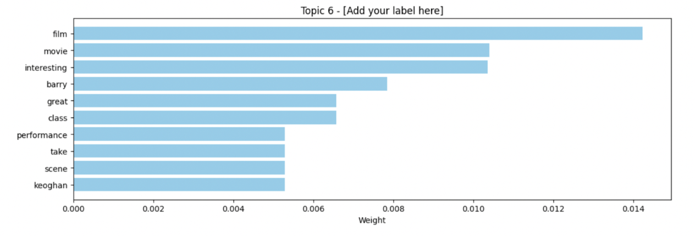

Introduction
To investigate how audiences respond to Saltburn and test our hypothesis about why morally complex, psychologically intense films resonate today, we analyzed Rotten Tomatoes and YouTube comments using Python tools including topic modeling, sentiment analysis, and term frequency analysis. Topic modeling revealed major themes like shock, character psychology, and moral ambiguity. Sentiment analysis showed strong polarization and emotional engagement. Term frequency highlighted viewers’ focus on characters, unsettling scenes, and interpretation rather than simple opinions. Together, these methods helped us answer our research questions by showing that audiences are increasingly drawn to films that are morally unclear, visually intense, and thought-provoking.
Research Questions
RQ1: How do people talk about the confusing or unclear morals in Saltburn?
RQ2: Why do viewers seem to like the movie’s weird or intense style instead of a clear ending?
RQ3: What do these reactions say about what people want from movies today?
Background: These research questions matter because they investigate how emotional responses shape the way audiences interpret morally ambiguous films like Saltburn. By analyzing sentiment in viewer comments, the study looks beyond what people talk about to how they feel when engaging with the film’s unclear moral messaging.
Data & Methods
Dataset
Data Source: Our data source came from audience reviews of Saltburn on Rotten Tomatoes and YouTube.
Collection Method: We used instant data scraper to collect our data.
Dataset Size: Saltburn has 281 entries in its CSV file, while the YouTube comments CSV contains 109 entries.
Ethical Considerations: We ethically sourced our information by relying only on publicly availible data and verifying each source for transparency and credibility.
Analysis Methods
Tools: Python
- Term Frequency Analysis: We used term frequency analysis to identify the most common words appearing in audience reviews of Saltburn from Rotten Tomatoes and YouTube comments. By calculating how often specific words occurred across both datasets, we were able to see which ideas, characters, and themes audiences discussed most frequently. This method helped reveal patterns in how viewers described the movie and provided evidence to support our interpretations about audience engagement and cultural attitudes toward morally complex storytelling.
- Sentiment Analysis (VADER): We used VADER sentiment analysis to assess the emotional tone of the reviews and comments, focusing on the distribution of positive, negative, and neutral sentiments. This was done across Rotten Tomatoes and YouTube videos comment sections, allowing us to deepen our understanding of fan perception of the film and its deeper role in society.
- Topic Modeling: Using topic modeling, we analyzed both YouTube comments and Rotten Tomatoes reviews to identify common themes in audience responses. The model grouped words that frequently appeared together into seven topics, which we interpreted as major conversations among viewers. This method helped us understand not only what audiences talked about most, but also how these ideas connected into broader themes that revealed shared patterns of engagement across both platforms.
Results & Analysis
Sentiment Analysis Results
Using VADER sentiment analysis, I examined audiences' positive and negative feelings toward the film, "Saltburn". The analysis revealed a significant amount of polarized opinions, with many viewers expressing strong emotional reactions to the film's themes and characters.

Code Example
Here's how I implemented the sentiment analysis using vaderSentiment:
from vaderSentiment.vaderSentiment import SentimentIntensityAnalyzer
import pandas as pd
analyzer = SentimentIntensityAnalyzer()
# Analyze sentiment for each text
df['compound'] = df['text'].apply(
lambda x: analyzer.polarity_scores(x)['compound']
)
# Classify sentiment
df['sentiment'] = df['compound'].apply(
lambda x: 'positive' if x > 0.05
else ('negative' if x < -0.05 else 'neutral')
)Topic Modeling Results
Using Gensim’s LDA, seven major discussion topics were identified based on frequently used words. From these, Topic 6 from Rotten Tomatoes and Topic 5 from YouTube comments were selected as the most representative for deeper analysis. Terms such as psychopath and sociopath highlight audience focus on mental states and ethical complexity, while names like Oliver, Ollie, and Barry indicate that discussions are strongly centered on specific characters. Overall, these topics reflect strong audience concern with characterization, emotional reactions, and moral ambiguity.

Term Frequency Results
The term frequency analysis shows that Rotten Tomatoes reviewers focused on narrative elements, using words like movie, character, plot, and twist, indicating strong engagement with Saltburn’s complexity and shocking moments. YouTube commenters, however, centered on characters and morality, with frequent terms like he, his, Oliver, and Felix, suggesting deeper discussion about motivations and ethical ambiguity. Overall, the results support the idea that audiences today are drawn to morally complex, psychologically intense films that encourage interpretation rather than offering clear answers.


Key Findings
The computational analysis revealed three major insights:
- Finding 1: Audience reactions show that viewers are drawn to Saltburn for its shocking visuals, morally complex characters, and psychological tension, engaging emotionally and intellectually with confusion and discomfort rather than wanting clear answers or a clear ending.
- Finding 2: The most negative and positive sentiments both mention the film's most provocative scenes, including: the bathtub scene, graveyard scene and 'vampire' scene. We can infer that these moments are pivotal in shaping audience reactions and interpretations.
- Finding 3: Based on the comments and sentiment analysis we know that those who appreciated the film tended to mention its artistic elements as well as the polarizing scenes, while those who disliked it often critisized the film's reliance on shock value as opposed to narrative. We can infer that those who enjoyed the film are generally more open to experimental, socially charged filmmaking, whereas those who did not respond as favorably seemed to prefer media that avoids controversial or overtly confrontational themes.
Detailed Results
Breaking down the sentiment distribution:
| Sentiment Category | Count | Percentage | Avg. Compound Score |
|---|---|---|---|
| Positive | 205 | 48.65% | 0.XX |
| Neutral | 72 | 22.40% | 0.XX |
| Negative | 112 | 29.00% | -0.XX |
What Surprised Me
We initially predicted that viewers would focus on Saltburn’s unclear morals and criticize the film for being confusing, but the data revealed something very different. Instead of frustration, people were drawn to the movie’s intensity, visuals, and overall weirdness. This challenged our understanding because it showed that audiences today value ambiguity and unsettling storytelling, rather than preferring basic plots or clear messages.
Critical Reflection
This project demonstrates what happens when coding meets culture by revealing insights that neither computational analysis nor traditional close reading could discover alone.
Integration of Methods
What computational methods revealed: The computational tools allowed us to see overall trends in how audiences reacted to Saltburn that would not be obvious from reading a few comments alone. The sentiment analysis showed that audience reactions were highly polarized, with almost half of the comments being positive (48.65%) and nearly one-third negative (29.00%), meaning viewers tended to feel strongly either for or against the film rather than remaining neutral. Topic modeling further revealed that discussions consistently centered on character psychology and moral judgment, as shown by frequent words such as psychopath, sociopath, and character names like Oliver and Felix. Term frequency analysis highlighted differences in how people talked about the film across platforms: Rotten Tomatoes users discussed narrative elements like plot, twist, and character, while YouTube commenters focused more on specific people and actions in the story. Together, these methods revealed large-scale patterns of emotional engagement and moral debate that could not be captured through traditional close reading alone.
What close reading added: Close reading helped us understand the meaning behind these patterns by examining how viewers explained their reactions in individual comments. Looking closely at references to major scenes like the bathtub, graveyard, and vampire moments showed that both praise and criticism centered on the same shocking sequences. This deeper analysis clarified why the sentiment was so divided: audiences were responding to the same elements but interpreting them differently. Close reading therefore added emotional and cultural context to the computational findings, showing how personal values and expectations about filmmaking shaped audience responses.
📐 Classification Logic
This project connects to Classification Logic This project connects to Classification Logic by showing how algorithmic grouping and labeling shape our understanding of audience reactions to morally complex films like Saltburn. Through sentiment analysis, comments were sorted into categories of positive, neutral, or negative, and topic modeling organized audience language into seven groups. These forms of classification revealed large patterns, such as strong emotional division and consistent focus on certain characters' psychology, but they also simplified how viewers actually expressed themselves. Many comments contained mixed or conflicted emotions, such as admiration for the film’s artistic style alongside discomfort with its gruesome content, yet these responses were placed into a single sentiment category. This shows how classification systems can make trends easier to study at scale while also limiting how fully individual emotional experiences are represented.
Critical question: What nuances are lost when we reduce complex cultural expressions to computational categories? When audience reactions are reduced to categories like “positive” or “negative,” important reactions such as sarcasm, conflicting emotions, and other interpretations are lost. Viewers who felt both disturbed and impressed by Saltburn were classified under only one emotional label, which skewed the results quite a bit. In addition, topic modeling groups words based on frequency rather than the reviews actual intention, which can overlook tone, symbolism, or cultural meaning in the viewers commentary. This simplifies the reviewers reaction and makes it more uniform instead of reading into the complexities of the comment.
🤖 AI Agency
The use of topic modeling and sentiment analysis in this project highlights key concerns related to AI Agency. Although the algorithms appear to “discover” themes and sentiments, they do not interpret meaning on their own. Our group of researchers selected the tools, cleaned the data, classified each data set, chose which topics were “most representative,” and interpreted what those topics meant in relation to culture and morality. AI identified word groupings and sentiment scores, but it was our human judgment that transformed these outputs into meaningful claims about audience psychology and film culture. While AI played a powerful role in our data analysis it doesn't generate understanding. Without our own analysis of the data the AI results could mislead or misconstrue our findings. Therefore, this project shows that AI can help us get to our results faster but the final interpretation of the anaylsis remains a humans responsiblity.
Limitations & Future Directions
What I would do differently: We focused only on non-critic audience comments, but incorporating professional critics’ reviews would provide a valuable additional dataset for comparison. We also limited our analysis to two platforms; expanding to more sites could have offered a broader view of audience reactions, though the time required would have made that difficult within a single semester.
Questions that remain: With more time, we could investigate how professional critics’ reviews compare to audience sentiment, examine differences across multiple platforms to see how community norms shape reactions, and track how opinions change over time after the film’s release.
Confidence in conclusions: We are confident in our findings because similar themes appeared across both platforms.The data produced clear and consistent patterns that matched close readings of the comments. However, the data represents only people who chose to post online, not all viewers. Because we studied only two platforms, the conclusions may not generalize to other communities. The findings reflect prominent discussions in these spaces rather than overall audience opinion.